主标识升级后的核心识别
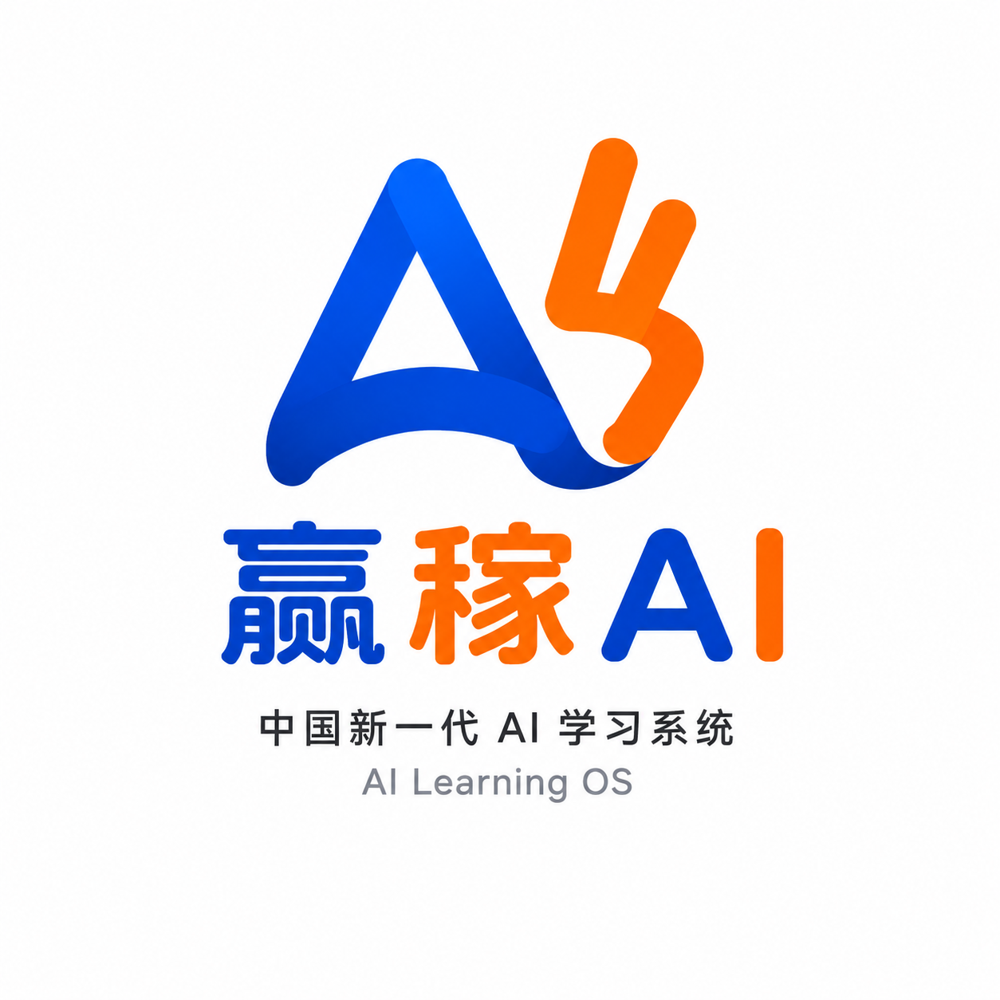
这份提案不是简单给出三种造型，而是围绕品牌接下来要解决的问题，提出三条不同强度的升级路径。每个方向都对应不同的品牌重心与传播结果。
自然流动，各自生长 · ziranliu
这不是对原有设计的否定，而是品牌进入下一阶段后，需要集中提升识别效率、系统完整度和传播记忆点。
三组方向分别回应不同的品牌重心。它们不是“哪个好看”的单选题，而是分别代表不同的升级态度、传播方式和未来延展潜力。
不对原 logo 的核心意象做大改动，在熟悉感基础上完成更成熟的升级。
减少重复表达，强化 “Yeah” 的轻松感与“赢”的结果感。
把 logo 做得更扁平、更平面，也更贴近当下数字品牌的视觉趋势。

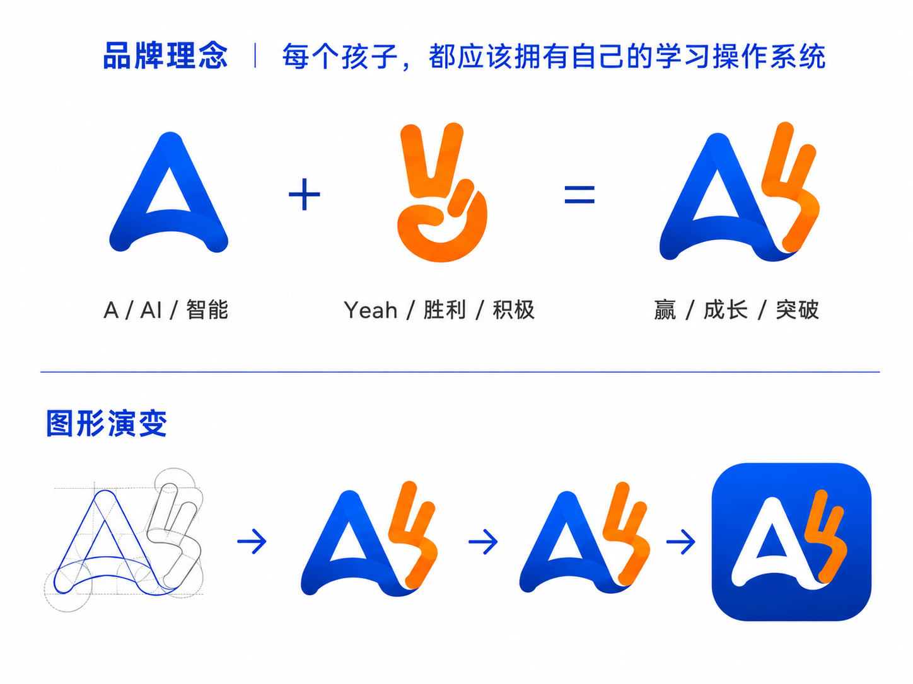
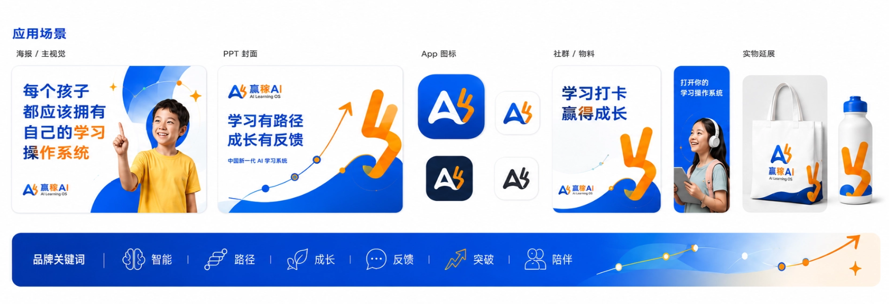
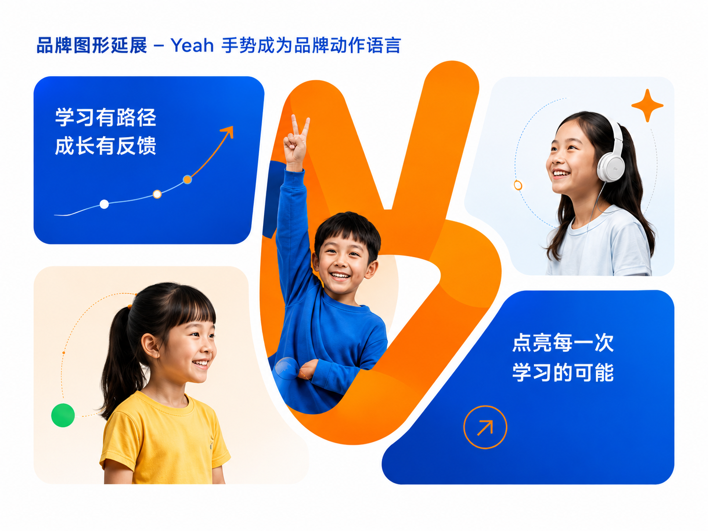
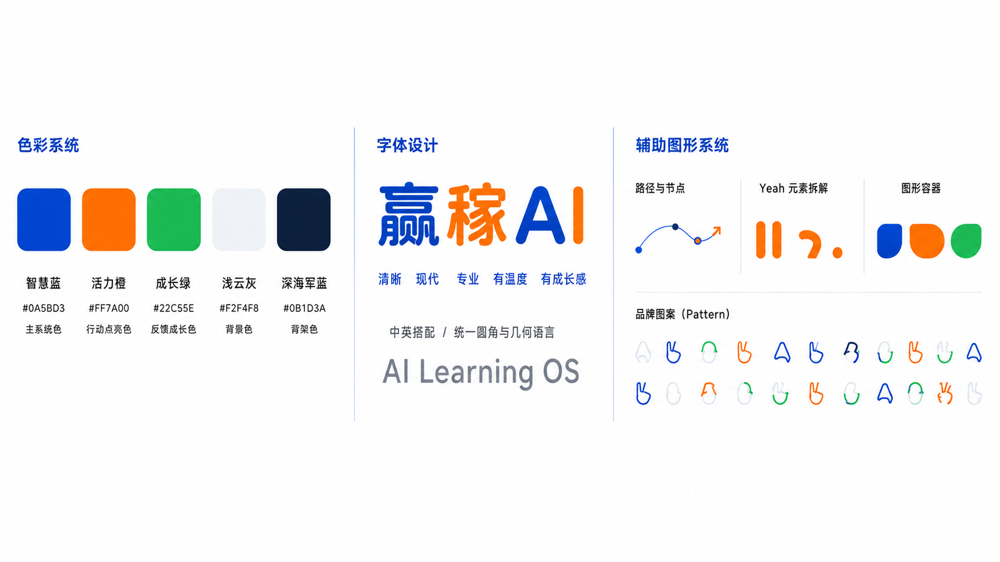
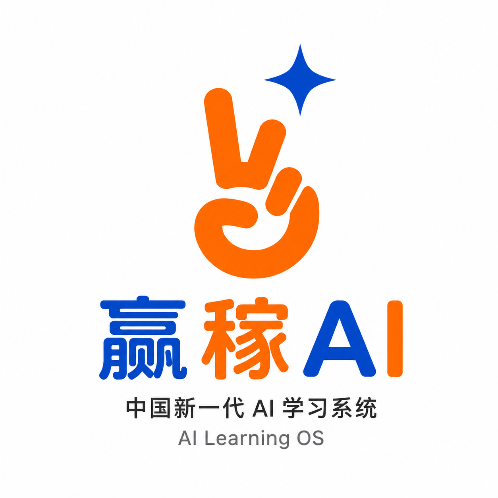
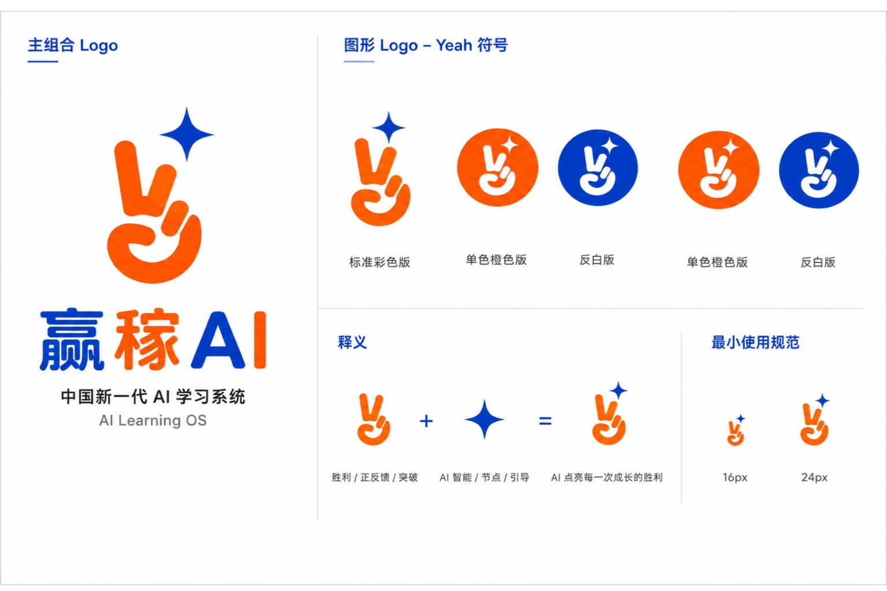
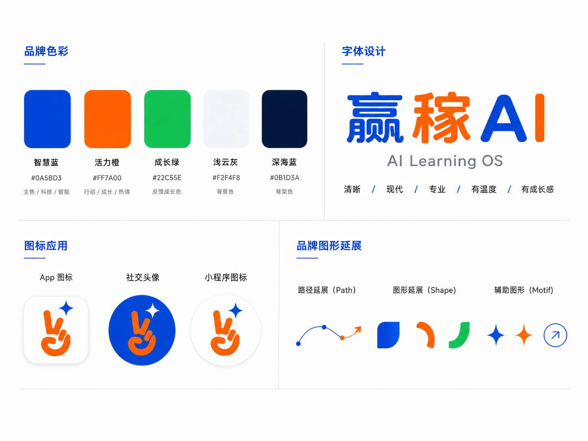
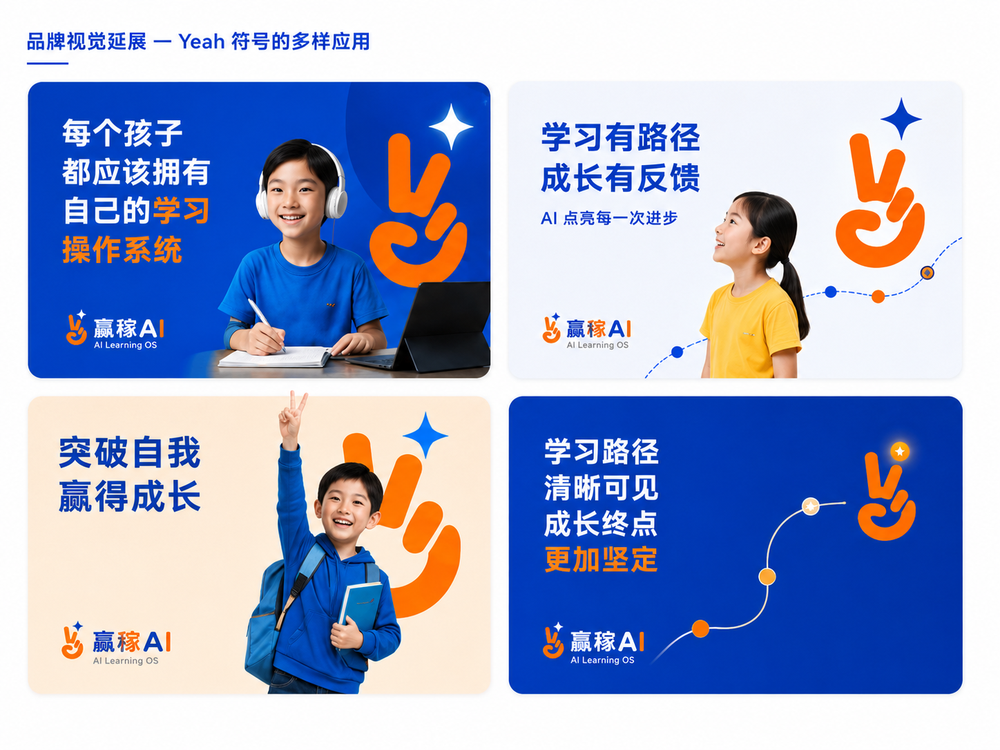
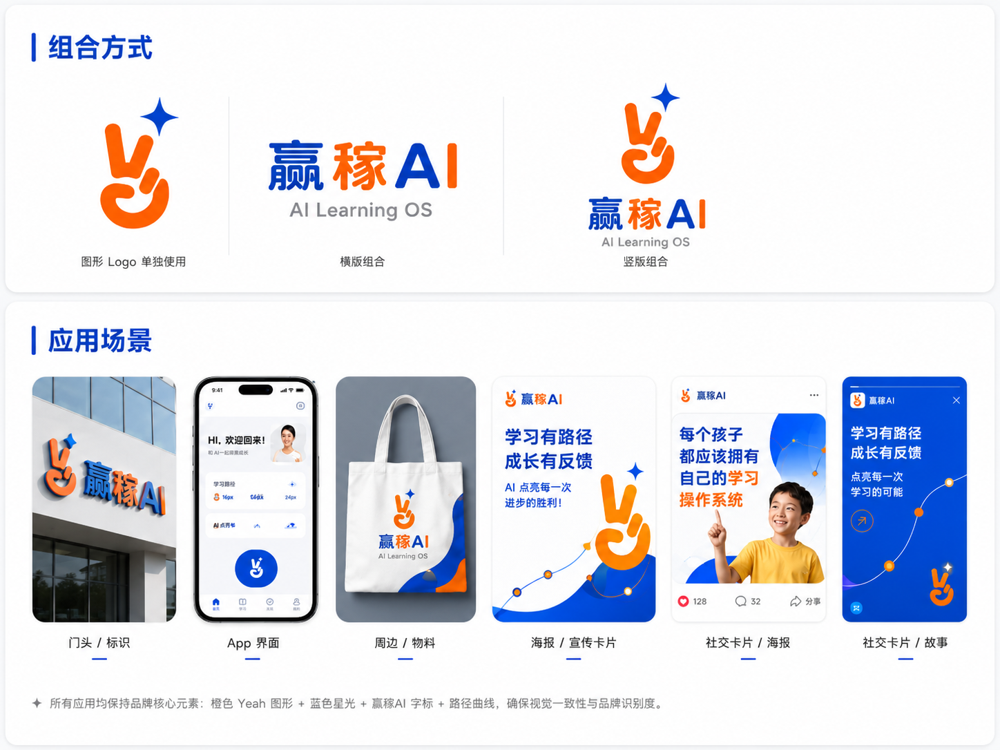
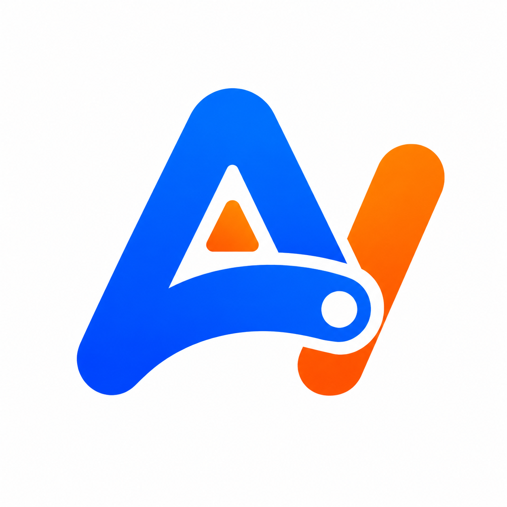
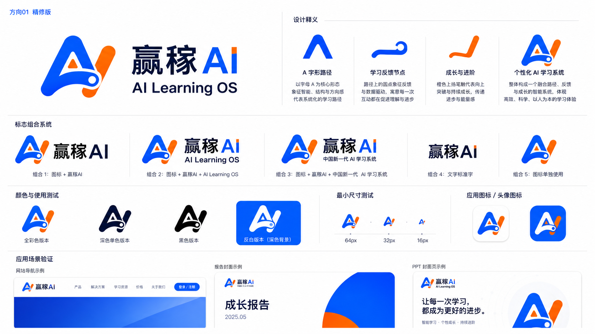
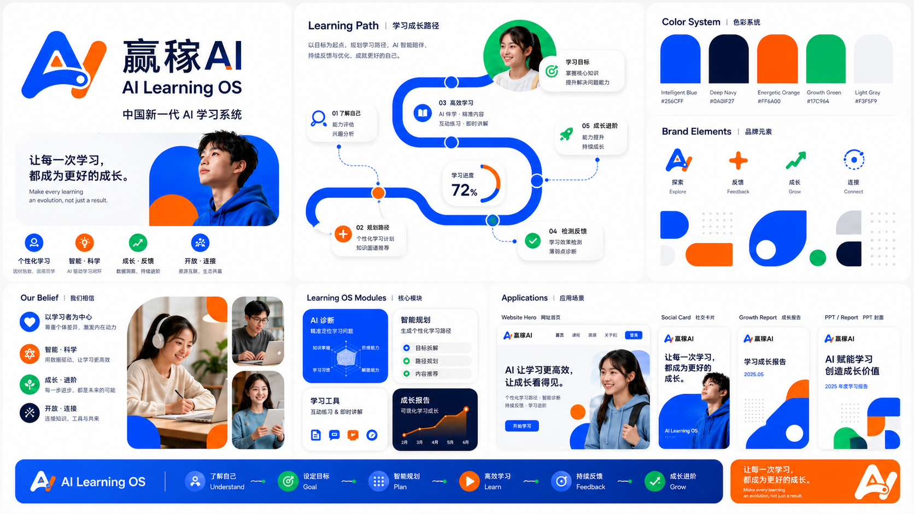